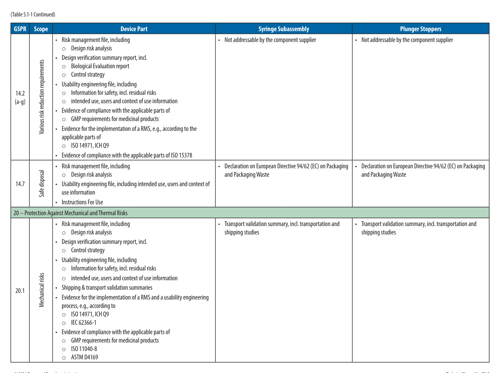
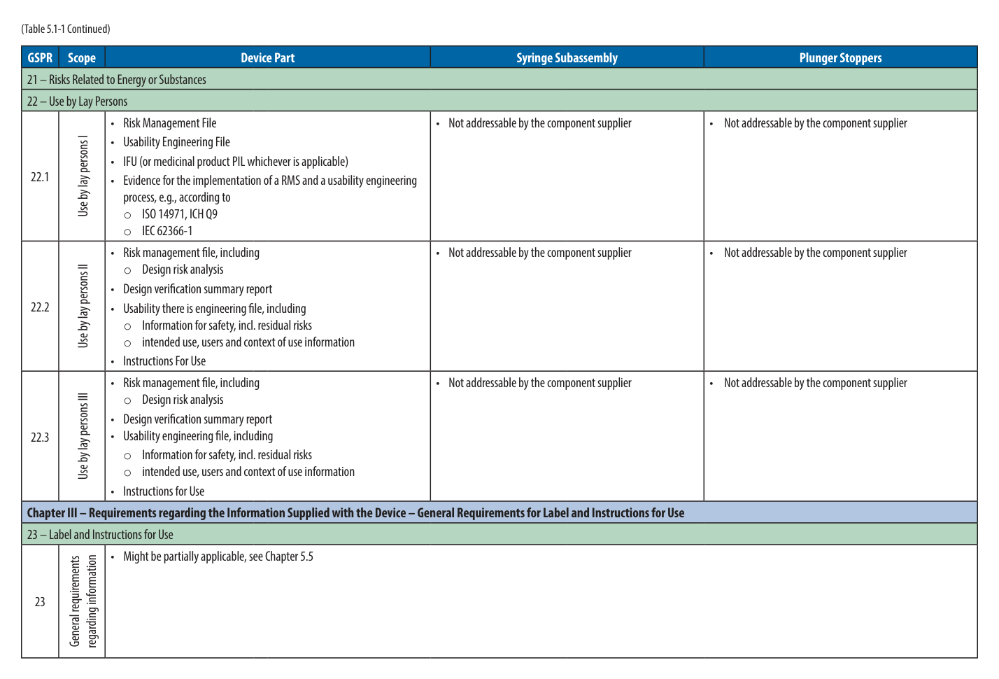
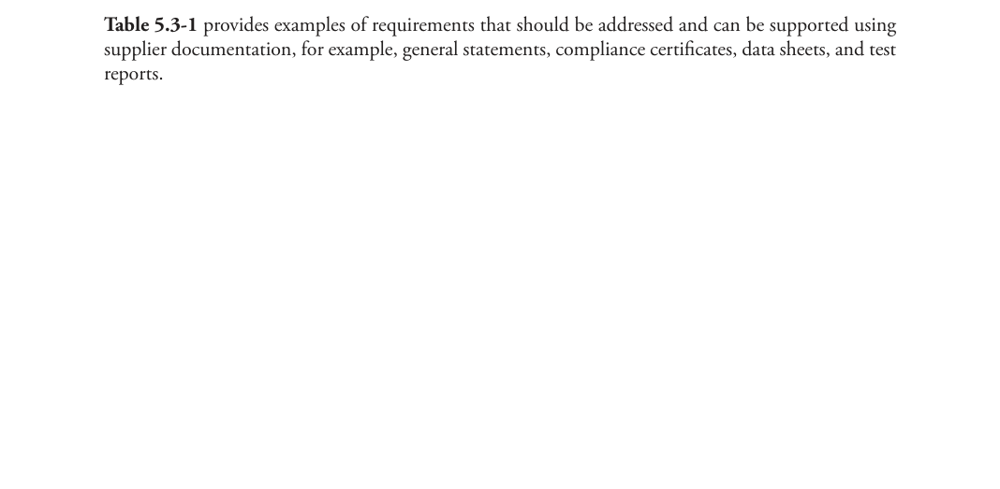
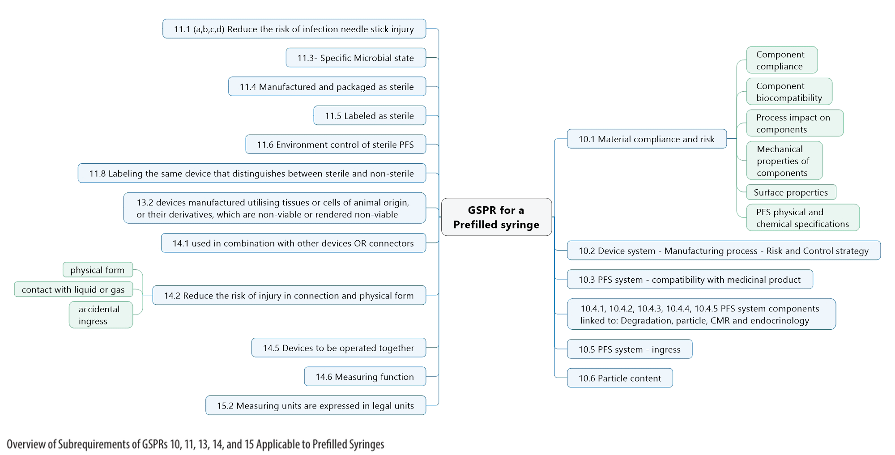
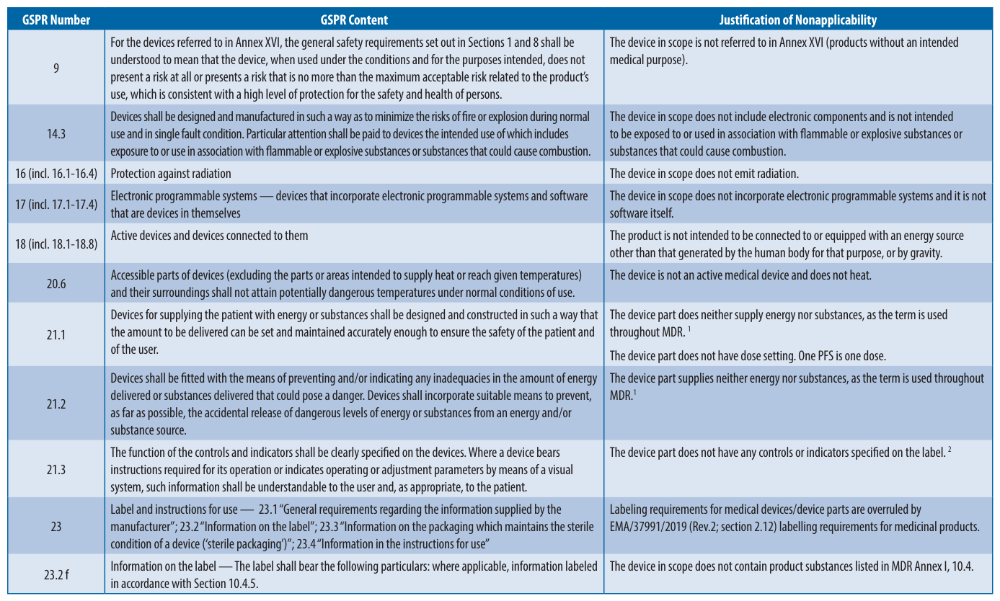

本節內容 Contents (Part A)
本章學習目標 Learning Objectives
- 區分 Extractables（萃取物）與 Leachables（浸出物）的定義差異，並理解兩者的包含關係。
- 說明預充填注射器（PFS）針筒管製造的四個步驟，及各步驟對 E&L 的潛在貢獻。
- 識別 EO 與 Gamma 輻射滅菌對包材萃取物/浸出物特性的影響。
- 比較三種萃取研究類型（Controlled / Simulated / Leachables），並理解各自適用情境。
- 連結 E&L 評估設計與 PIC/S Annex 1 容器密封完整性（CCI）要求，以及清潔驗證的方法論邏輯。

Figure 5.0-1: TR73 章節關聯圖（Section 5.0 之定位）— TR73 Chapter Relationship Wheel showing Section 5.0 context (PDF p31)
原文內容 Original Text
The characterization of extractables and leachables presents an important component in drug product development. Extractables are compounds that are forced out of a respective material or component under laboratory experimental conditions (i.e., high extraction power of the solvent, increased extraction temperature, but shorter exposure time than during normal use). Leachables are those compounds that actually migrate from the respective material or component (e.g., the pharmaceutical C/C system) into the drug product formulation during its intended storage and use conditions.
Typically, leachables represent a subset of the amount of extractables (3). The following questions are essential to consider in the course of characterization:
- Which compounds can migrate out of the C/C materials (extractables)?
- Which compounds and how much of each compound do in fact migrate into the drug product solution (leachables)?
- What is the impact of these compounds on patient safety?
- Do any of these compounds have a direct critical impact on the quality of the drug product?
Resolution of these questions requires knowledge of materials science, the component manufacturing process, analytical chemistry, and drug product manufacturing processes. The quantity and frequency of dosing are critical factors required for a thorough, expert review of the quality and safety implications, and requires a toxicologist to provide input into the evaluation.
This section describes considerations for evaluating extractables and leachables that may migrate from a PFS. Although this section may provide useful information to the pharmaceutical manufacturer, this technical report is not a regulatory guidance document, and manufacturers should be prepared to justify their evaluation approach to regulatory reviewers/inspectors.
導師解析 Tutorial Commentary
核心概念解析 E&L 雙層定義
Extractables（萃取物）：在實驗室強制條件下（高強度溶劑、高溫、短時間）被萃出的化合物——代表最壞情境的「潛力庫」。
Leachables（浸出物）：在實際使用/儲存條件下，真正遷移至藥品溶液中的化合物——是患者實際暴露的物質。
關係式：Leachables ⊆ Extractables。Extractables 是上界估計；Leachables 是實際風險。
比喻說明 Analogy
把 Extractables 想像成「清潔驗證棉棒取樣（最壞情境擦拭）」——刻意用最強方式採集表面殘留物，得到理論最大值。Leachables 則像「實際生產批次中量測到的產品殘留」——真實環境下的實際移轉量，永遠小於等於前者。E&L 研究的邏輯，與清潔驗證 coupon study 如出一轍：先建立最壞情境上界，再確認實際條件下是否達標。
重點提示 Regulatory Context
TR73 明確聲明本報告「非法規指引文件」，製造商需自行對主管機關論證評估方法的合理性。此一立場意味著，稽查時需備妥完整的科學風險評估論述——而非僅引用本 TR 作為依據。
毒理學家的參與不可或缺：劑量與頻率是安全性評估的核心輸入，需由毒理學家提供 TTC（Threshold of Toxicological Concern）判斷。
練習思考 Practice Questions
- 為什麼 Leachables 通常是 Extractables 的「子集合」？在何種情況下兩者數量可能接近？
- 若某化合物在 Extractables 研究中被檢出，但在 Leachables 研究中未被偵測，代表什麼意義？是否可直接排除安全風險？

Figure 5.1-1: 針筒管製造步驟示意（PDF p32）— Syringe barrel manufacturing process overview
原文內容 Original Text
The choice of the glass raw material is the first driver for controlling potential leachables in drug products. The pharmaceutical industry uses Borosilicate Type 1 glass tubes as raw material for manufacturing syringe barrels. Type 1 glass has the highest hydrolytic resistance and chemical stability of available glass formulations, and therefore limits migration of glass component raw materials into the drug product. Glass quality for hydrolytic resistance must meet the testing requirements in the relevant pharmacopeias (e.g., European Pharmacopoeia, USP, or Japanese Pharmacopoeia).
Delamination (the scaling off of very thin, visible-to-subvisible glass flakes) of glass surfaces contacting the product has been reported for some products packaged in glass vials, whereas delamination has not been reported in glass syringes so far. However, this possibility cannot be fully excluded during the storage of certain formulations. USP <1660> Evaluation of the Inner Surface Durability of Glass Containers addresses delamination and contributing factors in more detail (49).
The syringe barrel manufacturing process consists of four main steps, each of which can generate or introduce compounds that may later become extractables and/or leachables.
導師解析 Tutorial Commentary
核心概念：Type 1 Borosilicate Glass 的選擇理由
Type 1 玻璃（硼矽玻璃）是藥用注射器的唯一選擇，其核心優勢在於最高水解抗性（hydrolytic resistance）——即在注射用水（WFI）或液體製劑接觸下，玻璃表面不易溶出離子。相比 Type 2（鈉鈣玻璃，表面處理）或 Type 3（一般鈉鈣玻璃），Type 1 的化學惰性顯著更高。
各藥典對水解抗性的測試要求（歐洲藥典、USP、日本藥典）是最低門檻，廠商通常需在此基礎上提供更嚴格的內部規格。
重點提示：Delamination 風險不可完全排除
玻璃層離（delamination）在注射瓶中已有報告，在注射器中雖尚未報告，但 TR73 明確指出「不能完全排除」。特定製劑（高 pH、螯合劑、緩衝鹽）可能誘發此現象。USP <1660> 提供評估框架。
對 CDMO 的實務意義：客戶若使用高 pH 或含 EDTA 製劑，應將 delamination 風險評估納入相容性研究（compatibility study）。
比喻說明：四步驟製造 = 四個污染引入點
把針筒管製造想像成四道廚房工序：切割（無熱影響，風險最低）→ 成型（高溫加工，化學表面改變）→ 針頭組裝（黏著劑引入）→ 清洗/矽化/滅菌（最終清潔但也引入矽油）。每一道工序都是潛在的 E&L 貢獻點，必須逐一評估。
練習思考 Practice Questions
- 如果客戶要求使用 Type 2 玻璃針筒，你會如何評估並回應？
- Delamination 與一般玻璃離子溶出（leaching）在臨床風險上有何不同？
原文內容 Original Text
In the first step of the syringe barrel manufacturing process, glass tubing is cut to the appropriate size. The cut tubing pieces are then washed to remove glass particles and transferred to a forming machine. During this step, the glass does not undergo any treatment that could affect its physicochemical stability. This step has little impact on the generation of extractable or leachable substances.
導師解析 Tutorial Commentary
核心概念：切割步驟的低風險性
切割為純機械操作，無熱處理，不改變玻璃表面化學組成。切割後的沖洗步驟去除玻璃微粒，進一步降低污染風險。此步驟在 E&L 風險矩陣中評分最低，不需要針對萃取物/浸出物進行特別的評估研究。
重點提示
切割步驟雖低風險，但切割產生的玻璃微粒若未完全去除，仍可能成為可見/不可見微粒（visible/subvisible particles）的來源，對注射劑品質有直接影響。這是 CCI 以外另一個品質屬性的關注點。

Figure 5.1.2-1: 針筒成型步驟細節示意（PDF p33）— Syringe barrel forming step detail
原文內容 Original Text
In the second step, the syringe tip and flange are sequentially formed by local heating of the glass cut/tube. Annealing and forming steps can locally modify the surface composition of the glass, and consequently, influence the leachable chemical profile. Some manufacturers may use tooling lubricants during the manufacturing process, which could subsequently be viewed as a process leachable.
Tungsten pins are commonly used to form the tip channel. Tungsten residuals have received attention due to some cases of product incompatibility reported in the literature (50). Such sensitivity must be evaluated through testing and compatibility studies (e.g., spiking studies as appropriate). Residual tungsten levels may be controlled or minimized during the formation step by use of process parameters and washing, and possibly eliminated through use of substitute pin materials if a drug has significant sensitivity to tungsten.
In addition to sensitivity to tungsten, some drugs may possibly exhibit sensitivity to other metals. Therefore, if pins made out of substitute metals—such as iridium or platinum—are employed, then give consideration to employing the same control or minimization processes as those used for tungsten to reduce possible interactions between the drug and pin residues on the inner surface of the syringe.
It is known that in areas where formation occurs (such as the tip area), a higher concentration of pin-derived compounds may occur than in the areas that are not in direct contact with heat (i.e., hot flames) (51). Once formed, the syringe barrel passes through an annealing oven to release stress in the glass; then the needle is affixed.
導師解析 Tutorial Commentary
核心概念：成型步驟的高風險性
成型步驟是四個步驟中 E&L 風險最高的一環：
- 局部高溫改變玻璃表面化學組成（鈉離子富集），影響後續浸出物特性
- 鎢針（tungsten pin）殘留與蛋白質藥物的不相容性（aggregation）已有文獻記錄
- 工具潤滑劑可能成為製程浸出物
- 退火爐雖消除應力，但仍在熱處理條件下進行
重點提示：鎢殘留的臨床意義
鎢殘留誘發蛋白質聚集（aggregation）的風險在生物製劑（monoclonal antibody、insulin 等）中尤為關鍵。FDA 曾針對此議題發出警告。控制策略包括：製程參數優化、清洗強化、或替換為銥（iridium）/鉑（platinum）針——但替換材料同樣需要評估其殘留風險，不能假設「換掉鎢就沒問題」。
比喻說明：成型步驟的局部污染效應
如同焊接作業後焊點附近金屬成分會有局部富集，針筒錐頭（tip area）因高溫直接接觸鎢針，其針孔周邊的鎢濃度遠高於桶身其他部位。這說明採樣位置的選擇在 E&L 研究中至關重要——若只取桶身中段，將大幅低估真實風險。
練習思考 Practice Questions
- 某客戶的 IgG 製劑對鎢敏感，你會建議哪些控制措施？各有何優缺點？
- 改用鉑針後，是否就不需要進行鉑殘留的相容性評估？請說明理由。
原文內容 Original Text
In the third step, the glass barrel and needle are assembled. Some manufacturing operations conduct this step in line with the formation process. The needle is mechanically placed into the tip to a predefined depth; then adhesive is added and polymerized by ultraviolet (UV) light exposure.
The adhesive used to bond the needle into the glass syringe is a possible source of extractables and leachables, such as photoinitiator byproducts, residual monomers, and adhesion promoters (52, 53). After needle assembly, the syringes are packed into trays or other support/containers for further processing.
導師解析 Tutorial Commentary
核心概念：UV 固化黏著劑的 E&L 貢獻
針頭固定使用 UV 光固化黏著劑（acrylate-based），其潛在 E&L 貢獻物包括：
- 光引發劑副產物（photoinitiator byproducts）：UV 固化不完全時殘存，可遷移至製劑
- 殘餘單體（residual monomers）：低分子量，遷移性高
- 黏著促進劑（adhesion promoters）：矽烷類化合物，可能與蛋白質交互作用
此步驟使 E&L 研究必須納入針頭黏著劑作為獨立評估組件。
重點提示：UV 固化條件需驗證
黏著劑的 UV 固化程度（degree of cure）直接決定殘餘單體量。固化參數（能量劑量、波長、時間）需經過驗證，並納入製程管控（IPC）。對 CDMO 而言，若更換黏著劑供應商，應重新評估 E&L 特性。
原文內容 Original Text
The syringe supplier, pharmaceutical company, or contract fillers for bulk syringes perform the final step of the syringe barrel manufacturing process, which includes washing, siliconization, and sterilization. In this step, the bulk syringes are packaged into trays and cartoned.
Whether processed by the supplier or the pharmaceutical company, the syringes are washed in a controlled environment with hot WFI. After the syringes are dried and lubricated with medical-grade silicone oil, the needle shield is assembled. The washing process significantly reduces residual levels of process impurities.
Silicone oil is not formally considered to be extractable or leachable, but it is known to emulsify or migrate as very small droplets into liquid drug formulations. It is possible to analytically assess silicone oil migration using particulate counting systems that can discriminate silicone oil droplets from other particulate impurities (e.g., microflow imaging), or quantified (e.g., atomic absorption spectroscopy). Compatibility of the drug molecule and the formulation with the siliconized syringe should be evaluated as part of long-term compatibility testing.
After siliconization, the syringe barrels are nested (tip downward) and visually inspected. The nest is placed into a tub and packaged prior to sterilization. Refer to Section 11.8 for additional details related to secondary packaging in the packaging process.
導師解析 Tutorial Commentary
核心概念：矽油的特殊地位
矽油（silicone oil，主要為 polydimethylsiloxane, PDMS）在 E&L 分類上具有特殊性：
- 正式上不被歸類為 extractable 或 leachable
- 但已知會以微小液滴形式（silicone oil droplets）遷移至製劑中
- 對蛋白質製劑的穩定性有潛在影響（aggregation 誘發）
分析方法：微流成像（MFI, microflow imaging）可區分矽油液滴與其他微粒；AAS 可定量矽元素。
比喻說明：清洗步驟的角色
針筒清洗（WFI 熱水洗滌）相當於清潔驗證後的「沖洗步驟」——顯著降低製程殘留，但不能歸零。清洗後的殘留水準決定了後續 leachables 研究的起始背景值。這與清潔驗證的 residual acceptance criteria 邏輯完全對應：清洗不是消除，而是降低至可接受水準。
重點提示：矽化量的雙面性
矽油用量需在「足夠潤滑（減少活塞推力）」與「最小化矽油遷移（降低蛋白質聚集風險）」之間取得平衡。PIC/S Annex 1 要求容器密封系統的所有組件均應針對預期用途進行適當性評估，矽化量的驗證屬於此範疇。
練習思考 Practice Questions
- 為什麼矽油不被歸類為 extractable/leachable，但仍需在相容性研究中評估？
- 客戶要求降低針筒矽化量以減少蛋白質聚集風險，可能帶來哪些操作性後果？
原文內容 Original Text
As described in Section 13.0, several sterile barrier systems in one or two bag(s) are used in the final packaging of the washed and siliconized syringes (e.g., cardboard or plastic cases), depending on the customer requirements. These packages are placed on a pallet and undergo a sterilization cycle or a suitable alternative process.
The needle shield elastomer formulations are designed to allow sufficient gas penetration to achieve gas sterilization (e.g., ethylene oxide), especially at the material interfaces. The drawback of this property is the retention via absorption of ethylene oxide (EO) and its potential desorption over time.
Ethylene oxide and ethylene chlorohydrin residuals must comply with ISO 10993-7, Biological Evaluation of Medical Devices, and with the limits of 1 µg/mL residual EO and 50 µg/mL ethylene chlorohydrin per container established in EMA CPMP/QWP 159/01 (54–56). These are acceptance criteria for the batch release of empty syringes.
Clean, lubricated plunger stoppers packaged in nests or in bulk are frequently sterilized by gamma irradiation in plastic bags at validated doses. Moist heat may also be used for sterilization depending upon the requirements of the pharmaceutical company.
The sterilization process may affect extractables and leachables (e.g., depletion of volatile compounds by autoclaving, generation of new compounds by radiolysis during irradiation). Therefore, the method used to sterilize the component for evaluation is important and should represent the intended conditions of use.
導師解析 Tutorial Commentary
核心概念：滅菌方法對 E&L 特性的不同影響
不同滅菌方式對包材 E&L 特性有根本性的影響：
- EO 滅菌：EO 及其副產物（ethylene chlorohydrin）被彈性體吸收，需監控脫附（desorption）時間。限制：EO <1 µg/mL，ethylene chlorohydrin <50 µg/mL（EMA CPMP/QWP 159/01）。
- Gamma 輻射：輻射分解（radiolysis）可能產生新的有機化合物——這些化合物在未輻射樣品中不存在，需以輻射後樣品進行 E&L 研究。
- 高壓蒸氣滅菌（autoclaving）：高溫蒸氣可揮發並耗盡某些揮發性化合物，改變萃取物輪廓。
重點提示：研究樣品必須與實際使用條件一致
這是 E&L 研究設計的黃金原則：用於 extractables 研究的組件，必須以與最終產品相同的方式進行滅菌處理（same sterilization method, same dose）。若使用未滅菌或不同方式滅菌的樣品，所得數據不具代表性，無法支持上市申請。
此原則與 PIC/S Annex 1 §4.3 對容器密封系統 qualification 的要求一致：評估條件需代表預期使用條件（representative of intended conditions of use）。
比喻說明：滅菌改變 E&L 輪廓
把橡膠塞想像成一塊海綿：EO 滅菌後，海綿吸飽了 EO 氣體，需要「透氣時間（aeration）」讓 EO 逸散；輻射則像高能量射線將海綿的部分分子鏈打斷，生成原本不存在的碎片化合物。兩種方式都改變了「海綿的成分」，因此研究前必須先確定你要研究的是「哪種狀態的海綿」。
練習思考 Practice Questions
- 為什麼在 extractables 研究的樣品準備中，滅菌方法必須與最終產品一致？
- 某供應商提供的橡膠塞 E&L 資料是以 gamma 輻射滅菌取得，但你的工廠計畫改用 EO 滅菌。這份數據是否可以直接使用？
原文內容 Original Text
Possible extractables and leachables from a 1 mL long ready-to-fill syringe are chemicals introduced by various components and processes, including:
- glass tubing composition
- glass converting process
- injection needle
- adhesive used for needle bonding
- elastomeric components
- labeling inks or adhesives
- residual ethylene oxide
- other process residuals
The primary sources of packaging component extractables and leachables for 1 mL long staked needle PFSs are glass and elastomeric components (plunger stopper and needle shield).
導師解析 Tutorial Commentary
核心概念：E&L 來源優先排序
TR73 明確指出，1 mL long staked-needle PFS 的主要 E&L 來源為：
- 玻璃（glass）：金屬離子（硼、鈉、鉀、鋁、鎢）
- 彈性體（elastomeric）：橡膠塞（plunger stopper）與針帽（needle shield）
其他來源（黏著劑、標籤油墨、EO 殘留等）為次要但不可忽略的貢獻項。
重點提示：CCI 與 E&L 的交叉點
容器密封完整性（CCI，PIC/S Annex 1 §8.89-8.92）與 E&L 在彈性體的選擇上存在張力：高透氣性彈性體有助於 EO 滅菌穿透，但同時也更容易吸收並釋出 EO 及其副產物。這意味著材料選擇必須在 CCI 性能與 E&L 風險之間做系統性取捨。
比喻說明：多來源的 E&L 研究 = 汙水溯源
E&L 研究的來源識別，類似工廠廢水溯源調查：面對多個可能的排放源（玻璃、橡膠、黏著劑…），必須逐一取樣分析，才能確定哪個「管線」是主要貢獻者，哪些是次要貢獻者。採用「組件分離萃取（individual component extraction）」策略正是這個邏輯。
原文內容 Original Text
The majority of elastomeric components are made from rubber materials that are composed of several different ingredients and are subjected to chemical cross-linking (curing) in a process that takes place at an elevated temperature (thermoset rubber). The primary ingredients in pharmaceutical rubber are the elastomer (high-molecular-weight polymer), filler (inorganic mineral-based material), pigment (inorganic or organic), and curing system for cross-linking. Other frequently used ingredients are antioxidants, plasticizers, waxes, and accelerators that help accelerate the curing reaction.
Examples of potential extractables are polymer stabilizers, antioxidants and their degradation products, low-molecular-weight fractions of elastomers and plasticizers, metal ions, accelerators, and side products generated during the curing reaction.
Some thermoplastic rubber formulations used in manufacturing needle shields do not require a curing step; thus, extractables related to curing are avoided. However, the extractables not related to curing remain.
Plunger stopper formulations typically use a bromobutyl or chlorobutyl polymer as the elastomer. Plunger stoppers typically have a higher level of chemical cleanliness than needle-shield formulations. This is because needle-shield formulations typically made of polyisoprene or styrene-butadiene rubber have more complicated curing systems.
Another design parameter to investigate is whether using polymeric coatings that act as barriers between the plunger stopper and the drug product solution can further reduce the levels of potential leachables from the plunger stopper.
Suppliers of elastomeric components can provide packages of extractables information ranging from potential extractables lists to qualitative and quantitative determinations of extractables after extraction with model solvents under model conditions. The extractable information provided by the supplier may supplement the pharmaceutical company's evaluation but cannot replace drug compatibility studies for which the pharmaceutical company remains responsible.
導師解析 Tutorial Commentary
核心概念：橡膠成分的 E&L 貢獻機制
熱固性橡膠（thermoset rubber）的 E&L 來源層次：
- 原料本身（彈性體主鏈、填充劑、顏料）
- 硫化劑/促進劑（accelerators）及其固化反應副產物
- 抗氧化劑及其降解產物
- 低分子量增塑劑
- 金屬離子（來自礦物填充劑）
熱塑性橡膠（thermoplastic）無固化步驟，省去固化相關 extractables，但其他類別仍存在。
重點提示：供應商數據不能取代藥廠自身的相容性研究
TR73 明確指出：供應商提供的 E&L 數據「僅供補充，不能取代」藥廠對自身製劑的相容性研究。這與 FDA/EMA 的監管立場一致——藥廠是最終負責人（MAH），不能將責任外包給供應商。
實務上，供應商的 extractables 數據包（data package）是研究的起始點，而非終點。藥廠需以實際製劑條件（pH、溶劑、溫度、時間）進行 leachables 研究確認。
核心概念：Polymeric Coating 的屏障功能
聚合物塗層（如 Flurotec® B2 coating）可在橡膠塞與藥液之間形成物理屏障，顯著降低 leachables 遷移量。這是高風險製劑（如蛋白質、pH > 8 製劑）的重要選項。需注意：塗層本身也需進行 E&L 評估，且塗層完整性（coating integrity）須在整個有效期內維持。
練習思考 Practice Questions
- 為什麼 needle shield 的化學清潔度通常低於 plunger stopper？
- 若供應商提供了完整的 extractables 定量數據包，藥廠是否還需要進行 leachables 研究？為什麼？
原文內容 Original Text
Extractables related to glass are primarily metallic ions from mineral materials in the glass raw materials. The glass typically used for syringes consists mainly of silicon oxide, aluminum oxide, and boron oxide as network-forming components (e.g., borosilicate glasses) spiked with network-modifying components, such as sodium or potassium oxides.
High concentrations of leachable glass components, such as sodium or potassium, may cause the pH shift in unbuffered solution formulations, and thus become critical and affect the quality and stability of the drug product, and/or the stability of the glass surface.
Some glass also contains calcium, barium, magnesium, titanium, iron, or cerium to provide certain characteristics, such as color, strength, or formability (melting temperature). Potential contaminators during glass production or forming are refining agents, such as arsenic oxide, antimony oxide, alkali halides, and alkaline earth halides.
During syringe formation, tungsten contamination may occur when using tungsten pins to form the syringe cone (see Sections 5.1.2 and 14.6.2.1). Trace elements may also be present as contaminants from the added compounds listed above.
Within siliconized syringes, silicone may be present as polydimethylsiloxanes (PDMS). Silicone and tungsten species have the potential to interact with protein-based active pharmaceutical ingredients, and therefore need to be assessed (50).
導師解析 Tutorial Commentary
核心概念：玻璃 E&L 的化學本質
硼矽玻璃的網狀結構由 SiO2、Al2O3、B2O3 組成（network formers），Na2O/K2O 作為網狀修飾劑（network modifiers）填充於空隙中。Na+、K+ 是最易溶出的離子：
- pH 影響：Na+/K+ 溶出使無緩衝製劑 pH 升高，可能破壞蛋白質或 API 穩定性
- 精煉劑殘留：As2O3、Sb2O3 是高毒性雜質，玻璃製造過程中使用但需嚴格控制殘留
- 鎢污染：來自成型步驟，在錐頭部位濃度最高
重點提示：矽油 + 鎢對蛋白質的協同風險
TR73（參照文獻 50）指出，矽油（PDMS）與鎢離子均可與蛋白質藥物相互作用，誘發聚集（aggregation）。對生物製劑填充 CDMO 而言，這意味著相容性研究必須同時考慮兩者的聯合效應，而非分別獨立評估。
比喻說明：玻璃 E&L 類比清潔驗證殘留
玻璃組件的金屬離子溶出，類似清潔驗證中的 API 殘留監控：兩者都需要識別「哪種物質在何種條件下會遷移多少」，並設定科學合理的接受標準。差異在於清潔驗證的殘留來自上一批製劑，而玻璃 E&L 的「殘留」來自容器本身的材料。
練習思考 Practice Questions
- 某製劑為無緩衝水溶液（pH 6.0），為何玻璃鈉離子溶出需要特別關注？如何在 leachables 研究設計中體現這一風險？
- 如何透過分析方法區分玻璃組件中的鎢污染（來自製程）與鎢合金針頭本身的貢獻？

Figure 5.4-1: 萃取研究設計概覽（PDF p35）— Extraction study design overview
原文內容 Original Text
An important step for the evaluation of potential leachable substances is the choice of adequate extraction techniques and conditions. The current practice is to generate separate extraction profiles on each PFS device component (e.g., rubber stopper, syringe barrel, needle shield, and staked needle adhesive), and the assembled PFS device system.
The extractables profiles of each PFS device component help to identify issues related to individual components and the source of the extractables. An alternative approach involves extraction on the assembled syringe system. By exposing solvents only to the product contact surfaces of the PFS device, this technique provides a truly accurate extraction profile representative of the PFS device system.
A risk-based approach should be used to ensure detection of all critical substances that might migrate into a pharmaceutical formulation from the packaging material. Various extraction strategies may be used to force the migration of substances out of the packaging material, including different solvents, sample preparation, accelerated temperatures, and time. The most commonly accepted practices include a series of studies: the controlled extraction study, simulated extraction study, and leachable study. These studies are useful for defining the set of target leachables needed to develop the appropriate quantitative analytical methods.
Before being tested, components must be prepared (washed, siliconized, and/or sterilized) in a manner representative of expected usage. In addition, the extraction time should be optimized at least once for each basic material, such as for the elastomeric rubber or adhesive. USP <381> Elastomeric Closures for Injections (21) details such evaluation parameters.
Tables 5.4-1 and 5.4-2 outline considerations for proper extractables study design. Complete information on how to conduct these studies is available in other guidances and publications (21,22,49–52).
導師解析 Tutorial Commentary
核心概念：三層萃取研究架構
E&L 研究採用漸進式三層設計：
- Controlled Extraction Study（管控萃取研究）：強化條件（有機溶劑、高溫）→ 識別所有潛在 extractables（最大化萃出）
- Simulated Extraction Study（模擬萃取研究）：接近製劑的溶劑、加速穩定性條件 → 篩選最可能的 leachables 候選物
- Leachable Study（浸出物研究）：實際製劑或安慰劑、正常儲存條件 → 確認真實遷移量與患者暴露量
三層研究是連續的：前一層識別目標化合物，後一層量化實際風險。
比喻說明：三層研究類比清潔驗證 Coupon Study
Controlled extraction = 最差情境棉棒（coupon）取樣：使用最強溶劑、最高溫度，找出「最多能殘留多少」。Simulated extraction = 以 rinse solvent 模擬實際清洗液萃取。Leachable study = 實際產品批次中量測殘留。邏輯完全對應清潔驗證的三步驟：worst-case identification → representative conditions → actual batch verification。
重點提示：組件分離 vs. 整機萃取的策略選擇
兩種萃取策略各有優劣：
- 組件分離萃取：可溯源識別個別組件的 E&L 貢獻，利於問題排查，但可能遺漏組件間的交互作用
- 整機萃取（assembled system）：只暴露產品接觸表面，更真實代表實際使用情境，但無法區分各組件貢獻
TR73 建議兩種策略並用。PIC/S Annex 1 §2.5 要求容器密封系統整體考慮（holistic approach），支持整機萃取的必要性。
實務應用 Practical Application
CDMO 場景：客戶委託充填一款 anti-VEGF mAb，使用 1 mL PFS，計畫在歐盟上市。你需要設計 E&L 研究方案。需考量：（1）哪些組件需分離萃取？（2）使用 EO 還是 gamma 滅菌樣品？（3）三層研究分別採用哪些溶劑條件？（4）毒理學家何時介入評估？
練習思考 Practice Questions
- 為什麼「萃取時間優化」（extraction time optimization）是 E&L 研究設計的必要前置步驟？
- 若 controlled extraction study 發現了 10 種潛在 extractables，是否需要對所有 10 種都開發定量方法？判斷依據是什麼？
Table 5.4-1: Extraction Study Types 萃取研究類型
Source: PDA TR73 Table 5.4-1 (PDF p35–p36) | 參照 tbl-p36-1 原始圖表
| Study Type 研究類型 | Extraction Medium 萃取介質 | Temperature / Storage Time 溫度／儲存時間 | Purpose 目的 |
|---|---|---|---|
| Controlled Extraction 管控萃取 | Model solvents, including organic solvents and/or aqueous/organic mixtures（模型溶劑，含有機溶劑及/或水性/有機混合物） | Exaggerated high temperatures（誇大高溫條件） | 識別所有潛在萃取物（最大化萃出），建立 extractables 全貌 |
| Simulated Extraction 模擬萃取 | Solvent representative of the intended formulation（代表預期製劑的溶劑） | Similar to accelerated stability study（接近加速穩定性研究條件） | 篩選最可能遷移至製劑的化合物，定義 leachable 目標清單 |
| Leachables Study 浸出物研究 | Intended drug product or a buffer without the active component（實際藥品或不含活性成分的緩衝液） | Typical stability study values（正常穩定性研究條件） | 量化患者實際暴露量，支持安全性評估與上市申請 |

Table 5.4-2: Potential Extraction Study Considerations 潛在萃取研究考量事項（PDF p36）
Table 5.4-2: Potential Extraction Study Considerations 萃取研究設計考量（重建）
| Category 類別 | Items 項目 | Commentary 說明 |
|---|---|---|
| Materials to Evaluate 待評估材料 |
Syringe glass（注射器玻璃） Silicone（矽油） Needle（針頭） Needle adhesive（針頭黏著劑） Plunger stopper and needle shield elastomers（橡膠塞與針帽彈性體） |
各組件需分離評估，以識別個別 E&L 來源；整機萃取補充確認整體輪廓 |
| Extraction Techniques 萃取技術 |
Reflux Soxhlet extraction（索式迴流萃取） Ultrasonication（超音波萃取） Maceration / soaking（浸泡萃取） |
不同技術萃取效率不同。Soxhlet 效率最高（適用 controlled study）；浸泡最接近實際條件（適用 simulated/leachable study） |
| Parameters to Modify 可調整參數 |
Time（時間） Temperature（溫度） Solvent composition — pH / Polarity / Ionic strength / Surfactant concentration / Aqueous:organic ratio（溶劑組成：pH / 極性 / 離子強度 / 界面活性劑濃度 / 水性-有機比例） |
各參數需系統性優化。時間優化（time optimization）應對每種基本材料至少進行一次，以確認萃取達到平衡（plateau）。pH 選擇需涵蓋製劑的 pH 範圍，確保涵蓋極性與非極性化合物的萃取 |
本節重點回顧 Section 5A Summary
- E&L 定義：Extractables 為實驗室強制條件下萃出的化合物（上界）；Leachables 為實際使用中遷移至製劑的化合物（真實暴露）——後者是前者的子集合。
- 針筒管製造四步驟的 E&L 風險：切割（低）→ 成型（高，鎢殘留、熱改表面）→ 針頭組裝（中，黏著劑）→ 清洗矽化（矽油遷移）。
- 滅菌方法影響 E&L 特性：EO 殘留（需符合 ISO 10993-7 限制）、輻射分解產物（radiolysis）、熱揮發損失——研究樣品必須與預期使用條件一致。
- 主要 E&L 來源：玻璃（金屬離子、pH 影響）與彈性體（固化劑、抗氧化劑、增塑劑及其降解產物）為 PFS 主要來源。
- 三層萃取研究：Controlled（強化條件識別）→ Simulated（模擬製劑篩選）→ Leachables（實際製劑量化），設計邏輯與清潔驗證 coupon study 一致。
- 供應商數據補充但不取代：藥廠對自身製劑的相容性研究負有最終責任，不能依賴供應商 E&L 數據包直接上市申請。